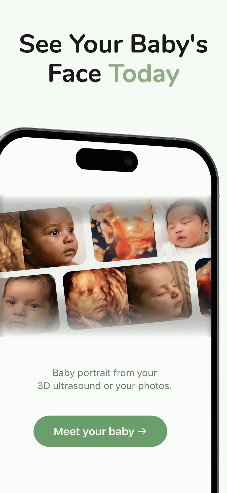

See Your Baby's Face Before They're Born
BabyBloom turns your 3D ultrasound into a realistic baby picture with AI — a portrait-quality 2K glimpse of the little one you've been waiting for. No ultrasound yet? Predict your future baby's face from both parents' photos.

- Free to download
- 2K portrait quality
- Results in about a minute
